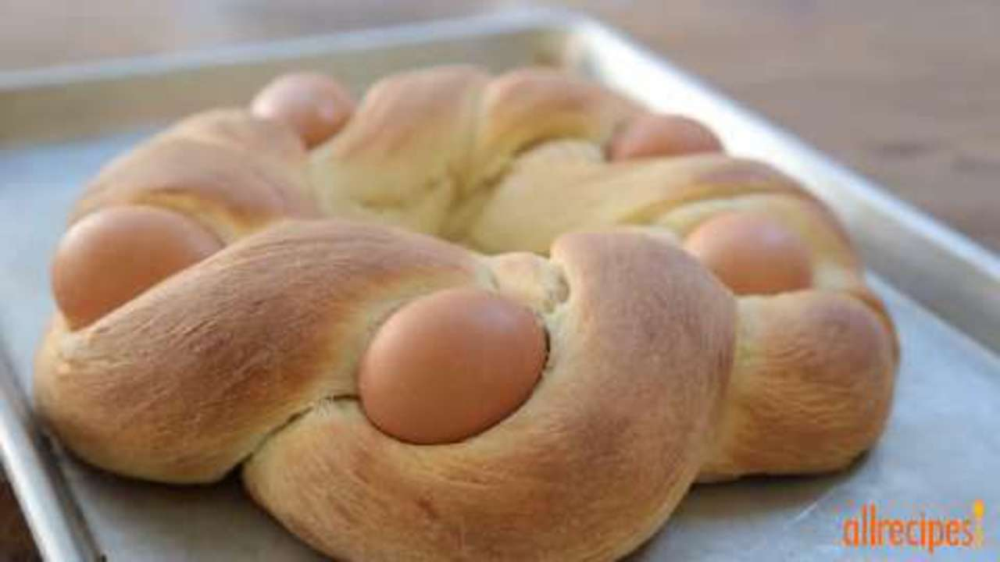

Braided Easter Egg Bread

Description
This decorative Easter bread has whole eggs baked into it! Do not cook the whole eggs, as they will bake at the same time that the bread does. The eggs can also be dyed for extra color.
Ingredients
- 2 ½ cups all-purpose flour, divided
- ¼ cup white sugar
- 1 teaspoon salt
- 1 (.25 ounce) package active dry yeast
- ⅔ cup milk
- 2 tablespoons butter
- 2 eggs
- 5 whole eggs, dyed if desired
- 2 tablespoons butter, melted
Steps
- In a large bowl, combine 1 cup flour, sugar, salt and yeast; stir well. Combine milk and butter in a small saucepan; heat until milk is warm and butter is softened but not melted.
- Gradually add the milk and butter to the flour mixture; stirring constantly. Add two eggs and 1/2 cup flour; beat well. Add the remaining flour, 1/2 cup at a time, stirring well after each addition. When the dough has pulled together, turn it out onto a lightly floured surface and knead until smooth and elastic, about 8 minutes.
- Lightly oil a large bowl, place the dough in the bowl and turn to coat with oil. Cover with a damp cloth and let rise in a warm place until doubled in volume, about 1 hour.
- Deflate the dough and turn it out onto a lightly floured surface. Divide the dough into two equal size rounds; cover and let rest for 10 minutes. Roll each round into a long roll about 36 inches long and 1 1/2 inches thick. Using the two long pieces of dough, form a loosely braided ring, leaving spaces for the five colored eggs. Seal the ends of the ring together and use your fingers to slide the eggs between the braids of dough.
- Preheat oven to 350 degrees F (175 degrees C). Place loaf on a buttered baking sheet and cover loosely with a damp towel. Place loaf in a warm place and let rise until doubled in bulk, about 45 minutes. Brush risen loaf with melted butter.
- Bake in the preheated oven until golden brown, about 30 minutes.